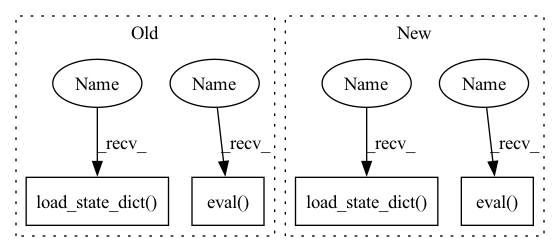

Pattern ID :12069
Before Change
// Load weights
model_state = torch.load(weights_path, map_location="cpu")["model_state"]
model.load_state_dict(model_state)
remodel.load_state_dict( model_state)
// Training mode has large effect on BatchNorm result - test will fail otherwise
model.eval()
remodel.eval()
// Forward
target = model(input)
target_top10 = torch.topk(target, k=10)[1][0].tolist()After Change
// Load weights
model_state = torch.load(weights_path, map_location="cpu")["model_state"]
model.load_state_dict(model_state)
comodel.load_state_dict( model_state)
// Training mode has large effect on BatchNorm result - test will fail otherwise
model.eval()
comodel.eval()
// Forward
target = model(input)
target_top10 = torch.topk(target, k=10)[1][0].tolist()In pattern: SUPERPATTERN
Frequency: 3
Non-data size: 4
Instances Fragment ID: 40758141
Project Name: lukashedegaard/co3d
Commit Name: 85d83724404879a086f4b9ef26aee5f4398830ac
Time: 2021-08-25
Author: lh@eng.au.dk
File Name: tests/cox3d/test_x3d.py
M Class Name: AnonimousClass
N Class Name: AnonimousClass
M Method Name: test_CoX3D(0)
N Method Name: test_CoX3D(0)
M Parent Class:
N Parent Class:
M File Name: tests/cox3d/test_x3d.py
N File Name: tests/cox3d/test_x3d.py
M Start Line: 137
M End Line: 202
N Start Line: 144
N End Line: 206
Before Change
//----------------------------------------//
assert self.backbone in ["resnet50", "hourglass"]
if self.backbone == "resnet50":
self.centernet = CenterNet_Resnet50(num_classes=self.num_classes, pretrain=False)
else:
self.centernet = CenterNet_HourglassNet({"hm": self.num_classes, "wh": 2, "reg":2})
//----------------------------------------//
// 载入权值
//----------------------------------------//
print("Loading weights into state dict...")
device = torch.device("cuda" if torch.cuda.is_available() else "cpu")
state_dict = torch.load(self.model_path, map_location=device)
self.centernet.load_state_dict( state_dict,strict=True)
self.centernet = self.centernet.eval()
if self.cuda:
os.environ["CUDA_VISIBLE_DEVICES"] = "0"
After Change
//-------------------------------//
assert self.backbone in ["resnet50", "hourglass"]
if self.backbone == "resnet50":
self.net = CenterNet_Resnet50(num_classes=self.num_classes, pretrained=False)
else:
self.net = CenterNet_HourglassNet({"hm": self.num_classes, "wh": 2, "reg":2})
device = torch.device("cuda" if torch.cuda.is_available() else "cpu")
self.net.load_state_dict( torch.load(self.model_path, map_location=device))
self.net = self.net.eval()
print("{} model, and classes loaded.".format(self.model_path))
if self.cuda:
Fragment ID: 40758140
Project Name: bubbliiiing/centernet-pytorch
Commit Name: d8a34002c4045ca583b43a5f431513f8fd5ac37c
Time: 2021-10-09
Author: 47347516+bubbliiiing@users.noreply.github.com
File Name: centernet.py
M Class Name: CenterNet
N Class Name: CenterNet
M Method Name: generate(1)
N Method Name: generate(1)
M Parent Class: object
N Parent Class: object
M File Name: centernet.py
N File Name: centernet.py
M Start Line: 77
M End Line: 110
N Start Line: 102
N End Line: 114
Before Change
)
// Continual model
remodel = CoX3D(
dim_in=3,
image_size=160,
frames_per_clip=4,
num_classes=400,
x3d_conv1_dim=12,
x3d_conv5_dim=2048,
x3d_num_groups=1,
x3d_width_per_group=64,
x3d_width_factor=2.0,
x3d_depth_factor=2.2,
x3d_bottleneck_factor=2.25,
x3d_use_channelwise_3x3x3=1,
x3d_dropout_rate=0.5,
x3d_head_activation="softmax",
x3d_head_batchnorm=0,
x3d_fc_std_init=0.01,
x3d_final_batchnorm_zero_init=1,
temporal_fill="zeros",
)
// Load weights
model_state = torch.load(weights_path, map_location="cpu")["model_state"]
model.load_state_dict(model_state)
remodel.load_state_dict( model_state)
// Training mode has large effect on BatchNorm result - test will fail otherwise
model.eval()
remodel.eval()
// Forward
target = model(input)
target_top10 = torch.topk(target, k=10)[1][0].tolist()After Change
)
// Continual model
comodel = CoX3D(
dim_in=3,
image_size=160,
frames_per_clip=frames_per_clip,
num_classes=400,
x3d_conv1_dim=12,
x3d_conv5_dim=2048,
x3d_num_groups=1,
x3d_width_per_group=64,
x3d_width_factor=2.0,
x3d_depth_factor=2.2,
x3d_bottleneck_factor=2.25,
x3d_use_channelwise_3x3x3=1,
x3d_dropout_rate=0.5,
x3d_head_activation="softmax",
x3d_head_batchnorm=0,
x3d_fc_std_init=0.01,
x3d_final_batchnorm_zero_init=1,
temporal_fill="zeros",
se_scope="clip",
)
// Load weights
model_state = torch.load(weights_path, map_location="cpu")["model_state"]
model.load_state_dict(model_state)
comodel.load_state_dict( model_state)
// Training mode has large effect on BatchNorm result - test will fail otherwise
model.eval()
comodel.eval()
// Forward
target = model(input)
target_top10 = torch.topk(target, k=10)[1][0].tolist() Fragment ID: 40758142
Project Name: lukashedegaard/co3d
Commit Name: 3a1ca5de4898fd89bc774492cf0eeaed905baba1
Time: 2021-09-10
Author: lh@eng.au.dk
File Name: tests/cox3d/test_x3d.py
M Class Name: AnonimousClass
N Class Name: AnonimousClass
M Method Name: test_CoX3D(0)
N Method Name: test_CoX3D(0)
M Parent Class:
N Parent Class:
M File Name: tests/cox3d/test_x3d.py
N File Name: tests/cox3d/test_x3d.py
M Start Line: 137
M End Line: 202
N Start Line: 144
N End Line: 206